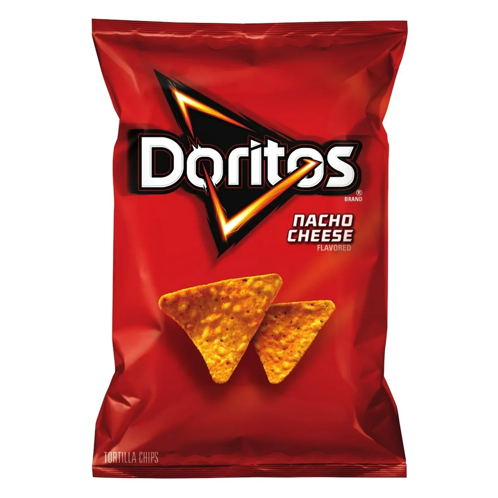
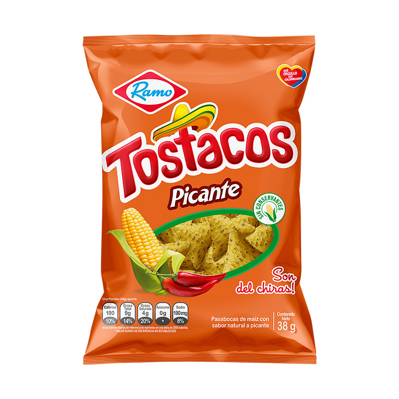
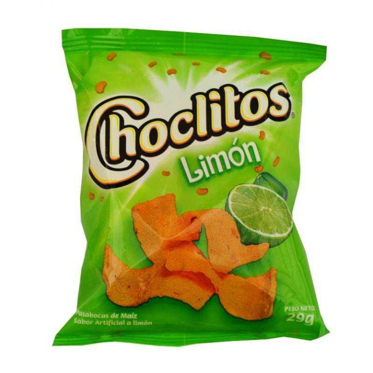
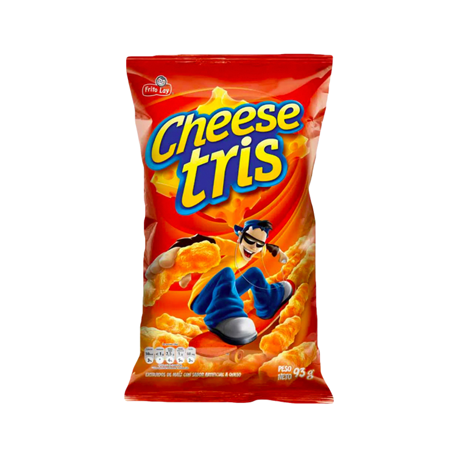

Objetivos
Nataly Espejo
Objetivo General
Promocionar proyectos de alta calidad y servicio excepcional
Para satisfacer las necesidades y deseos de nuestros clientes
Mientras generamos un crecimiento sostenible y rentable en el mercado de perros calientes
Objetivos específicos
1. Queremos diversificar el menú con opciones veganas y gourmet
2. Ofreceremos optimizar procesos para poder reducir tiempos de espera
3. Buscamos aumentar la visibilidad mediante diferentes formas de marketing digital
4. volveremos a nuestros clientes fieles, por las diferentes promociones que ofreceremos
5. Dar altos estándares de higiene y calidad
Aqui tienes un reportaje sobre los perros calientes!!
https://www.eltiempo.com/cultura/gastronomia/hot-dogs-el-maravilloso-encanto-de-los-perros-calientes-colombianos-706278
Conoce nuestros toppings



